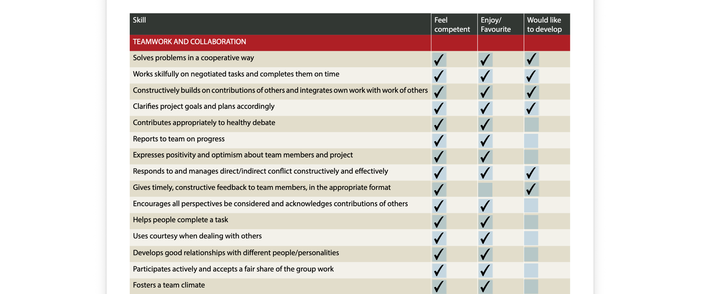
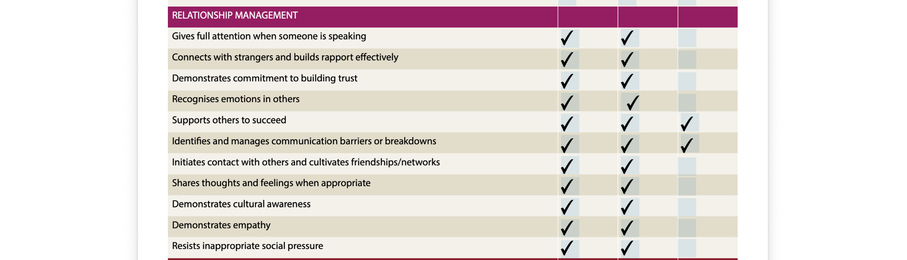
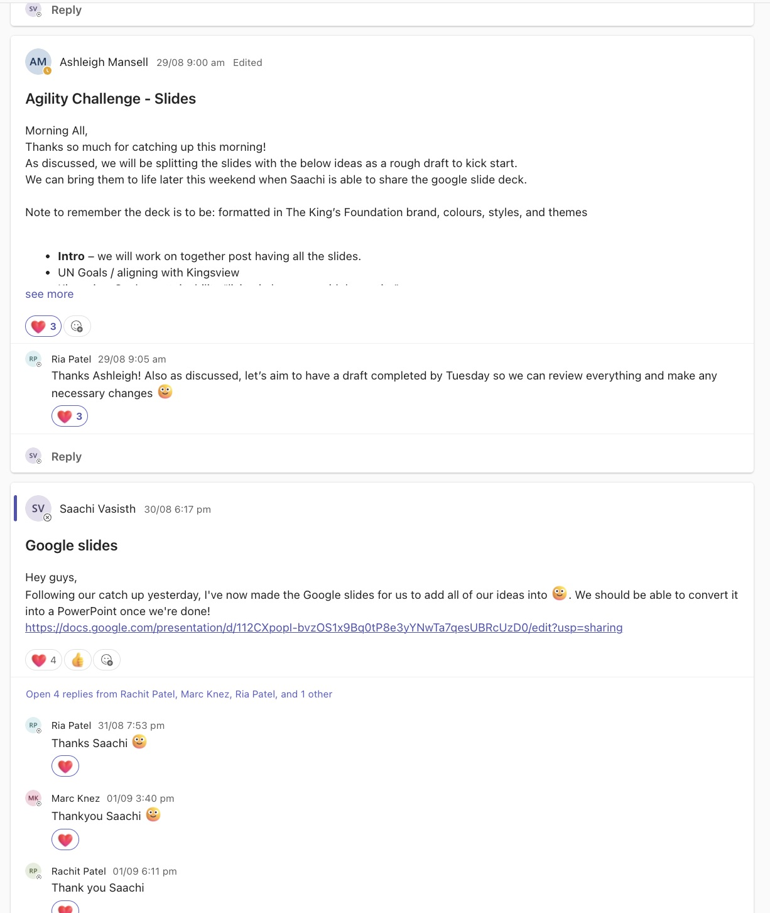
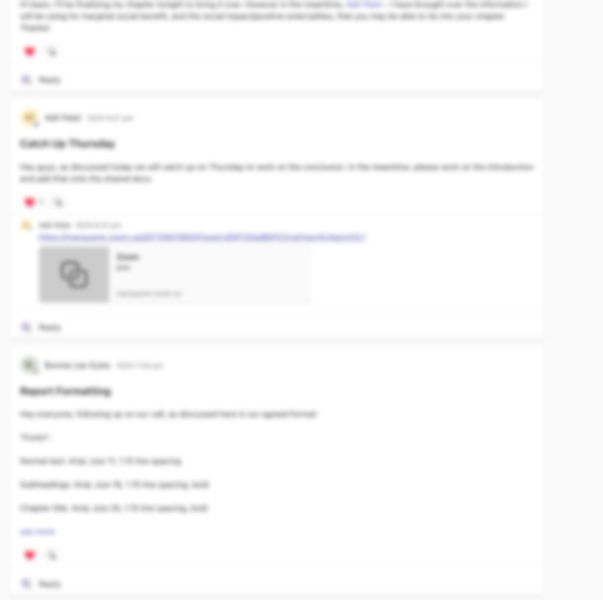

The work is
connected.
Working well with others is more than being agreeable. It involves sharing information early, listening to different perspectives and recognising when the process itself needs to improve.
Relationships that make work easier to coordinate.
People & Development work depends on colleagues trusting each other to communicate accurately and follow through. Team 4K gave me a way to test how consistently I did those things under real deadlines.
EVIDENCE / MQBS3010 TEAMS COMMUNICATION · DEBRIEF · SELF-ASSESSMENT
What I thought I did well. What I needed to test.
In my self-assessment, I identified teamwork, listening and relationship-building as strengths. But ticking a box only shows how I see myself. I wanted to compare that view with what actually happened when our team needed to coordinate work under pressure.


Making my contribution visible to the team.
In Team 4K, I shared the division of our HR topics, updated others on progress and helped clarify responsibilities. Scheduled calls and Teams discussions helped us identify gaps between independently drafted sections.
These anonymised extracts demonstrate communication routines, not an independent measure of their effectiveness.


A good result didn't mean a perfect process.
Our Team 4K agility debrief recorded team self-ratings of 9/10 for teamwork and task achievement. Yet it also recorded time pressure, uncertainty and shifting responsibilities. I realised that completing a task successfully did not mean we had managed every part of it well.
Although I became more proactive about updates and feedback, I was still often reacting to issues rather than anticipating them. Next time, I would set earlier check-ins, name a person responsible for each task and use smaller milestones to spot risks before deadlines became urgent.
The HR Business Partner at Canva described how a technically capable colleague needed to involve others more effectively. It helped me see that doing my part well is not enough when others cannot build on it.
HOW I'D TEST IMPROVEMENT / FEWER LATE HANDOVERS · CLEARER TASK OWNERSHIP · EARLIER IDENTIFICATION OF BLOCKERS
Being responsible for my work also means noticing how it affects everyone else's.
HOW I'D APPLY IT AT MORAY & AGNEW ↗